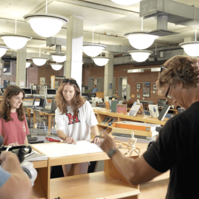
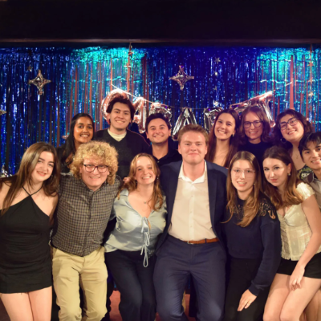

Kaitlyn Kushner
Something personal is that I am enjoy listening to music and watching movies. Professionally, I am an independent videographer. And something peculiar is I am involved in many Registered Student Organizations at Syracuse University!

